"Quest 2 Handtracking Passthroug" を試してみました。その手順などをこちらで紹介します。
“Quest 2 Handtracking Passthrough Multiplayer“ は何か、っていうことは下記 Youtube を閲覧してみてください。
このページでは、下記プログラムを自身の Quest 2 へインストールして遊べるようになるまでを目標に進めていきます。
Quest 2 Handtracking Passthrough Multiplayer - YouTube
https://www.youtube.com/watch?v=p9pdInwHofc&t=171s
プログラムのソースコード一式は、下記 GitHub から入手可能です。
https://github.com/SteampunkDigital/UnityVRStarter
下記からビルド済み apk ファイルをダウンロードできます。
http://hidetoshi.la.coocan.jp/Programing Items/Metaverse/Meta_Quest/questtest.apk
Android の表示をPC画面上へミラーリング表示するためのツール、とのことでした。これも使ってみます。
Vysor - Chrome ウェブストア (http://google.com )
https://chrome.google.com/webstore/detail/vysor/gidgenkbbabolejbgbpnhbimgjbffefm?hl=ja
”SideQuest” は、Meta Quest 2 へ apk ファイルをインストールするためのツールです。
SideQuest (http://sidequestvr.com
)
https://sidequestvr.com/
SideQuestを使ってOculusQuestにapkファイルをインストールしよう！
https://vracademy.jp/development/install_sidequest/
Oculus公式サイトで開発者登録をおこないます。
まずは開発者団体の登録から。
次のOculusの開発者向けURLにアクセスします。
右上の登録ボタンをクリックです。
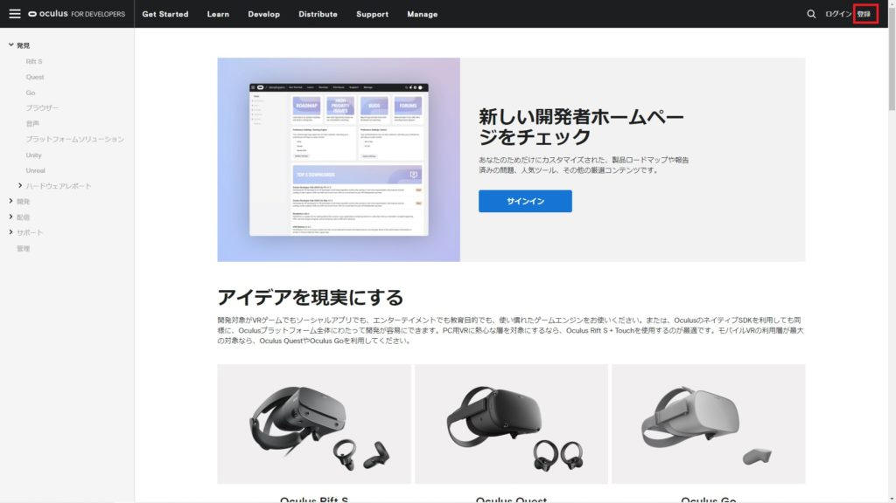
説明がいろいろ書いてあるので確認し、「Facebookアカウントで登録」をクリックします。
Windowsの方はADBドライバーのインストールをします。
以下のサイトにアクセスし、ADBドライバーをダウンロードします。
https://developer.oculus.com/downloads/package/oculus-adb-drivers/
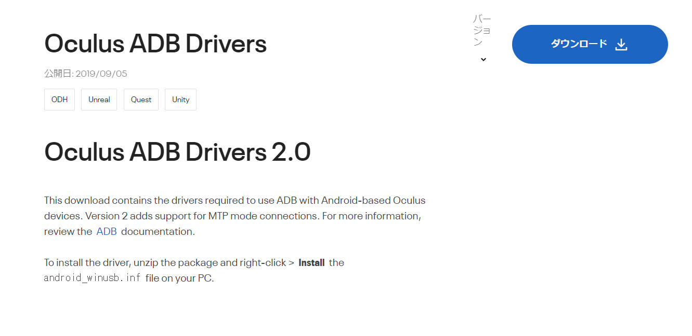
「Oculus 開発者ハブ」を下記から取得してインストールします。
https://developer.oculus.com/downloads/native-android/
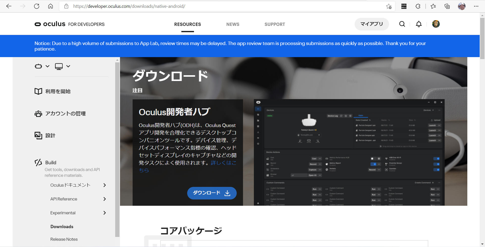
”Oculus Developer Hub” を起動します。
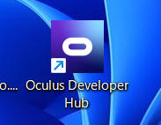
”Device Manager” から ”Enable Developer Mode” を ON に切り替えます。
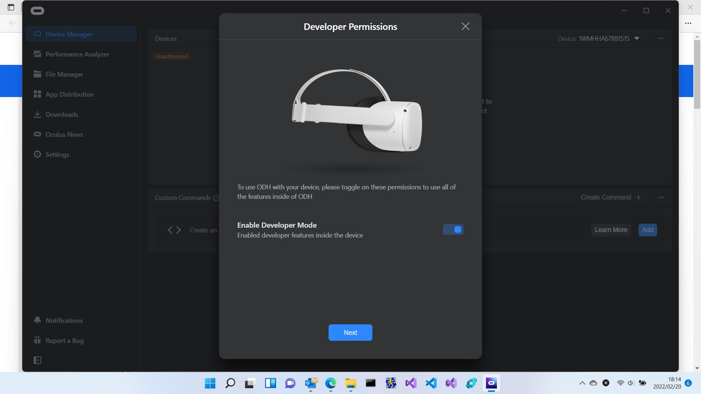
Quest 2 内の画面でPCとの接続を［OK］したら、下図のような画面になりました。
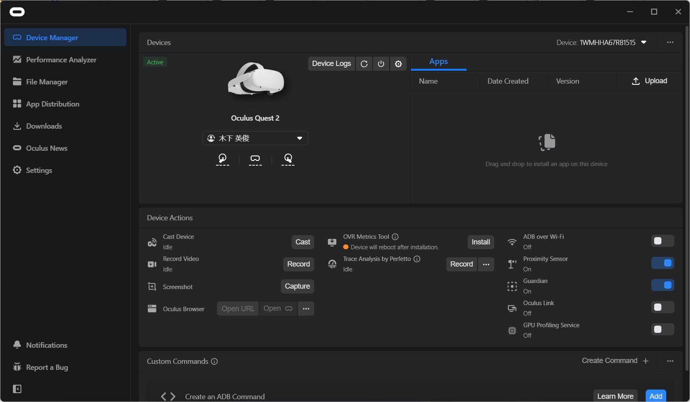
ビルド後の apk ファイルを以下に置いておきます。
http://hidetoshi.la.coocan.jp/Programing Items/Metaverse/Meta_Quest/questtest.apk
いよいよ、SideQuestをダウンロードしていきます！
以下のサイトにアクセスします。使用しているPC環境に合わせてインストーラをダウンロードします。
https://sidequestvr.com/setup-howto
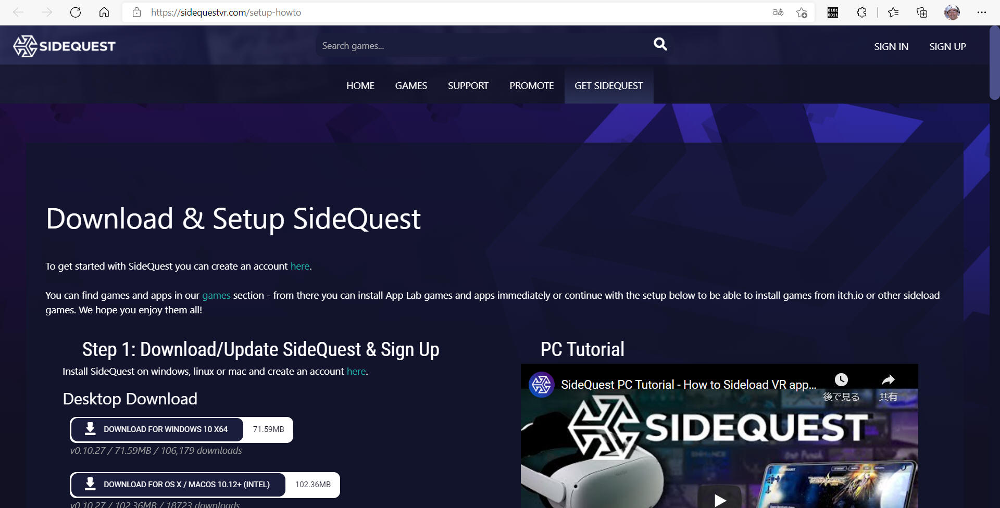
私は Windows 版をダウンロードしました。
難しくないので詳細省略。インストールを完了して起動したらこんな画面でした。
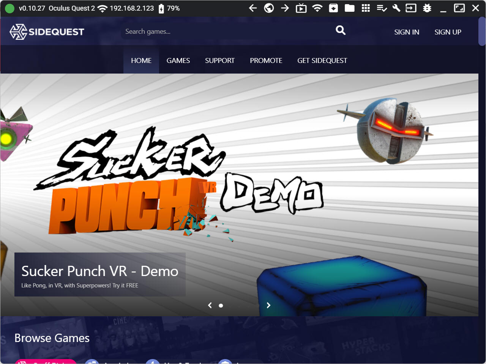
SideQuestはストアからアプリをインストールすることもできますが、自前のapkファイルをアップロードしてインストールすることもできます。
いよいよ、apkファイルのインストールを行っていきます！
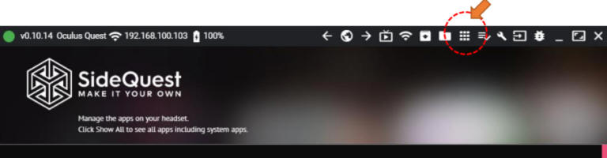
⇩
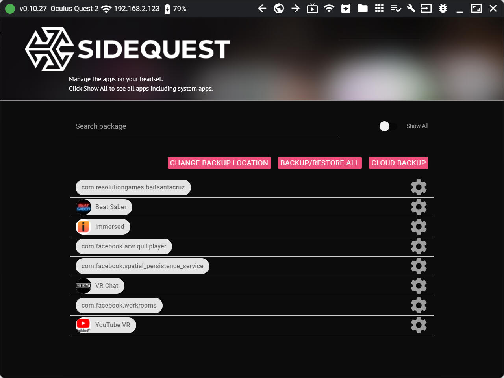
インストール中はタスクアイコンに1と表示されます。
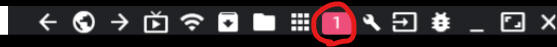
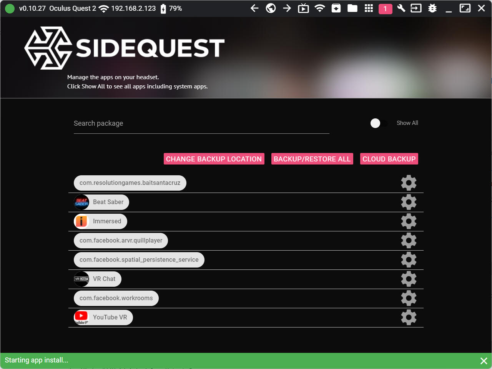
上の数字が消えたら Quest へのインストール完了です。
Quest 2 中の画面では「提供元不明」に分類されるアプリになっていました。
”VRStarter”
を起動します。
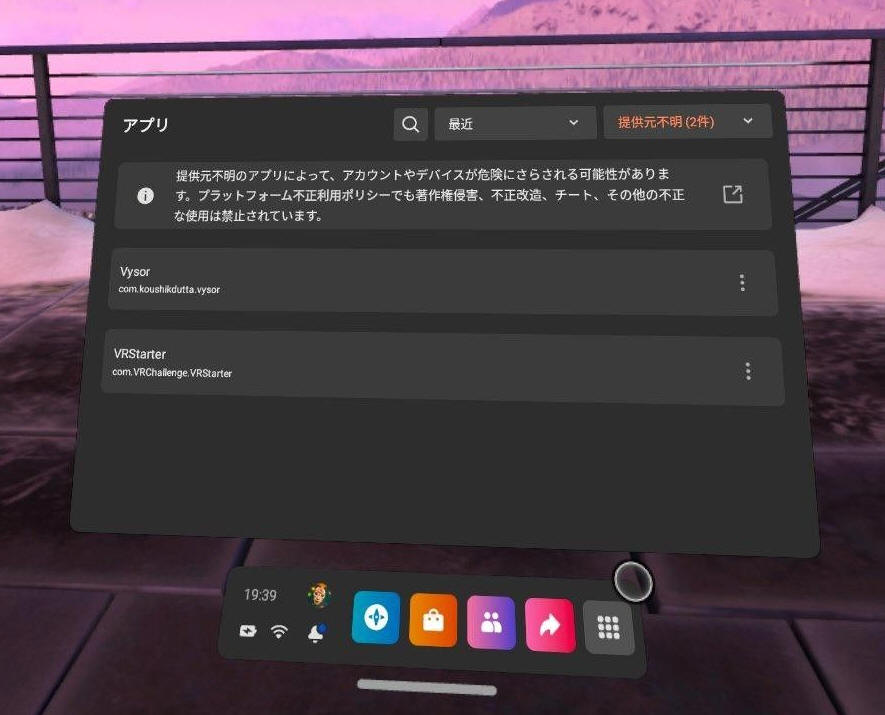
インストールした ”VRStarter” を動かす様子を以下に動画でアップします。
画面キャプチャーは ”Vysor” というアプリを使用しました。
以上です
アイコン8個並んでいる左下の「デバイス」を選択
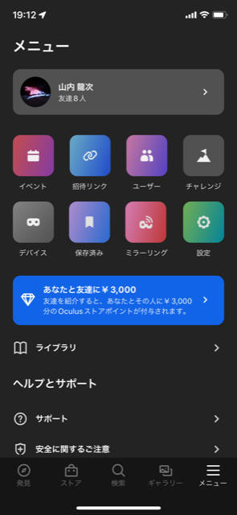
下の方に「ヘッドセットの設定」があり、その中の「開発者モード」で設定
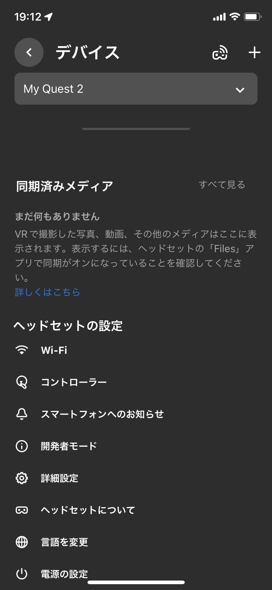
本ページの情報は、特記無い限り下記 MIT ライセンスで提供されます。
AR FukuokaのTogetterまとめ
Lunch Time XR #04: Meta
Questのパススルー とMRTKを使ってみよう - Togetter
開発者登録
ダイレクトアクセスしたリンク先
https://developer.oculus.com/manage/organizations/create/
今回実施した海外の方の英語説明の開発手順動画
Oculus Passthrough
API With MRTK And Oculus Quest 2 WORKS NOW ! - YouTube
| 2022-03-29 | - | 新規作成 |